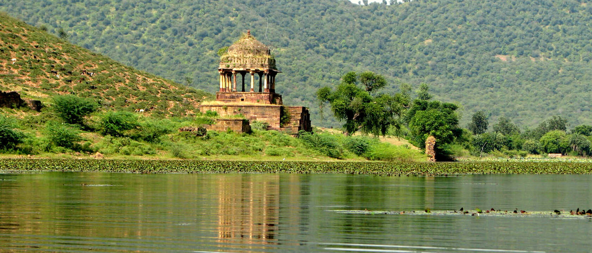

destination

Baran
A separate area carved out of the beautiful region of Kota, Baran is located further in the Hadoti province of Rajasthan. A traveller’s dream, Baran is the land of picturesque wooded hills and valleys, where one can stumble upon old ruins that tell stories of an era long gone. The city is known for its Ram- Sita temples, serene picnic spots and vibrant tribal fairs and festivals.
The history of Baran dates back to the 14th century when Solanki Rajputs ruled over the region. In 1949, Baran became the head-divisional quarter of Kota when Rajasthan was reconstituted. It became an established district of Rajasthan in 1991.Baran is popular for attracting tourists who prefer exploring the non-commercial aspects of the State. Its architectural marvels, a beautiful collection of temples dedicated to Ram and Sita and mighty fortresses add to Baran’s natural beauty.